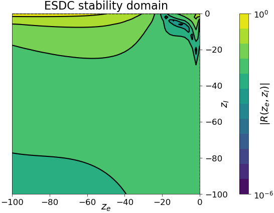
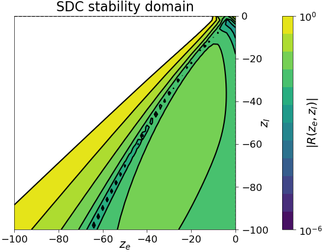
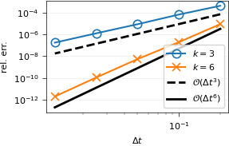
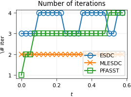
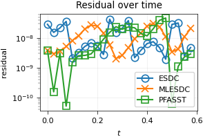

Exponential SDC for the Monodomain Equation in Cardiac Electrophysiology¶
This project implements the exponential spectral deferred correction (ESDC) method for the monodomain equation in cardiac electrophysiology. The method proposed here is an adaptation of the ESDC method proposed by T. Buvoli to the monodomain equation. In particular, the implicit-explicit Rush-Larsen method is used as correction scheme. Moreover, not all model components have exponential terms, therefore the resulting method is an hybrid between ESDC and the standard SDC method.
Monodomain equation¶
The monodomain equation models the electrical activity in the heart. It is a reaction-diffusion equation coupled with an ordinary differential equation for the ionic model and is given by
plus the boundary conditions, where \(V(t,x)\in\mathbb{R}\) is the transmembrane potential and \(z_E(t,x)\in\mathbb{R}^n\), \(z_e(t,x)\in\mathbb{R}^m\) are the ionic model state variables. The ionic model right-hand side \(g_E\) is a general nonlinear term, while \(\Lambda_e\) is a diagonal matrix. The typical range for the number of unknowns \(N=1+n+m\) is \(N\in [4,50]\) and depends on the ionic model of choice.
Spatial discretization yields a system of ODEs which can be written in compact form as
where \(\mathbf y(t)\in\mathbb{R}^{M N}\) is the vector of unknowns and \(M\) the number of mesh nodes. Concerning the right-hand sides, \(f_I\) is a linear term for the discrete diffusion, \(f_E\) is a nonlinear but non-stiff term for \(I_{ion},g_E\), and \(f_e\) is a severely stiff term for \(\Lambda_e(V)(z_e-z_{e,\infty}(V))\).
The standard (serial) way of integrating the monodomain equation is by using a splitting method, where \(f_I\) is integrated implicitly, \(f_E\) explicitly, and \(f_e\) using the exponential Euler method (which is inexpensive due to the diagonal structure of \(\Lambda_e\)). We denote this method as IMEXEXP.
The ESDC method for the monodomain equation¶
A possible way to parallelize the integration of the monodomain equation is by employing the SDC method in combination with the IMEXEXP approach for the correction scheme (preconditioner). However, this approach is unstable due to the severe stiffness of \(f_e\). Therefore we propose a hybrid method, where we employ SDC for the \(f_I,f_E\) terms and ESDC for the \(f_e\) term. For the correcttion scheme we still use the IMEXEXP method. The resulting method can be seen as a particular case of ESDC and will be denoted by ESDC in the next figures, for simplicity.
Running the code¶
Due to their complexity, ionic models are coded in C++ and wrapped to Python. Therefore, before running any example you need to compile the ionic models by running the following command in the root folder:
export IONIC_MODELS_PATH=pySDC/projects/Monodomain/problem_classes/ionicmodels/cpp
c++ -O3 -Wall -shared -std=c++11 -fPIC -fvisibility=hidden $(python3 -m pybind11 --includes) ${IONIC_MODELS_PATH}/bindings_definitions.cpp -o ${IONIC_MODELS_PATH}/ionicmodels$(python3-config --extension-suffix)
Then an example can be run:
cd pySDC/projects/Monodomain/run_scripts
mpirun -n 4 python run_MonodomainODE_cli.py --dt 0.05 --end_time 0.2 --num_nodes 6,3 --domain_name cube_1D --refinements 0 --ionic_model_name TTP --truly_time_parallel --n_time_ranks 4
Stability¶
We display here the stability domain of the ESDC and SDC methods, both with IMEXEXP as correction scheme, applied to the test problem
with \(\lambda_I,\lambda_E,\lambda_e\) representing \(f_I,f_E,f_e\), respectively. We fix \(\lambda_E=-1\) and vary the stiff terms \(\lambda_I,\lambda_e\) only. We see that the ESDC method is stable for all tested values of \(\lambda_I,\lambda_e\), while SDC is not.
 {kind=link}
{kind=link}
Convergence¶
Here we verify convergence of the ESDC method for the monodomain equation. We fix the number of collocation nodes to \(m=6\) and perform a convergence experiment fixing the number of sweeps to either \(k=3\) or \(k=6\). We use the ten Tusscher-Panfilov ionic model, which is employed in practical applications. We see that we gain one order of accuracy per sweep, as expected.
{kind=link}
Iterations¶
Here we consider three methods:
ESDC: with \(m=6\) collocation nodes.
MLESDC: This is a multilevel version of ESDC with \(m=6\) collocation nodes on the fine level and \(m=3\) nodes on the coarse level.
PFASST: Combination of the PFASST parallelization method with MLESDC, using 24 processors.
We display the number of iterations required by each method to reach a given tolerance and the residual at convergence. As ionic model we use again the ten Tusscher-Panfilov model. We see that PFASST requires a reasonalbly small number of iterations, comparable to the serial counterparts ESDC and MLESDC.
 {kind=link}
{kind=link}